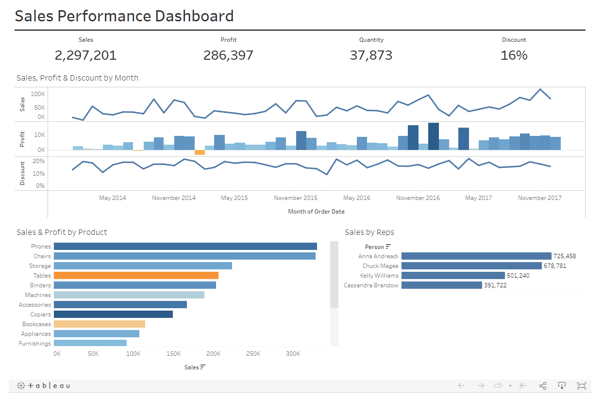

This project explored Covid-19 cases till date in SQL Server. The goal of this project was to get more insight on how the world was affected. Functions such as Joins, CTEs, views were all utilized to get a better insight.

WebScraping and and converting Worldometer data into csv format.
A comparison between "The Railway Children and Great Expectation" of the Gutenberg Collection. Analysing the frequency of sentiment of the books.

This is a dashboard report that gives HR an insight into their employees attendance.

Drawn insight from sales dataset.